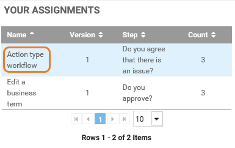
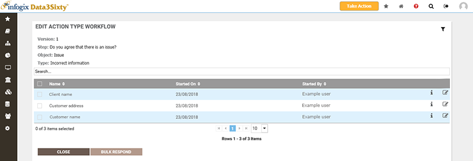
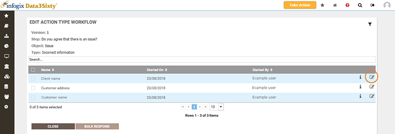
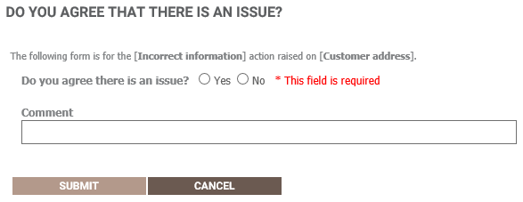
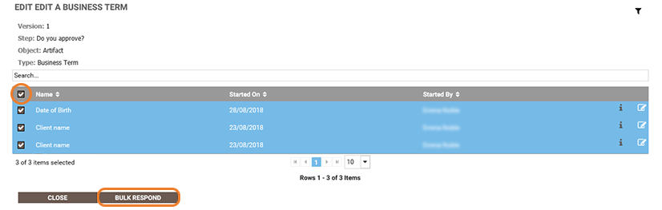
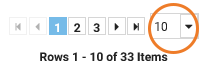
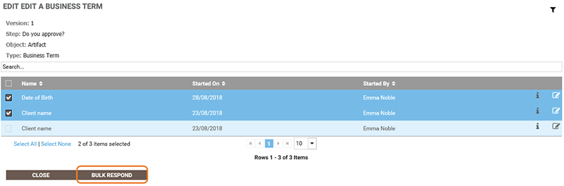
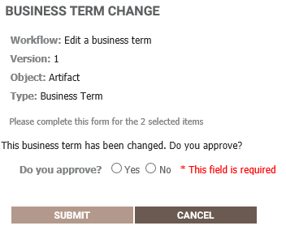

|
|
Your assignments
From the home page, you can see a list of your outstanding workflow assignments in the Your Assignments panel:

These are tasks that are assigned to you as a result of a workflow step, with each row showing tasks relating to a separate workflow step, where:
- The Name column shows the name of the workflow that generated the assignment.
- The Version column shows the version of the workflow.
- The Step column shows the name that was assigned to the Form activity when the workflow was created, that is, the specific workflow step that generated the assignment.
- The Count column shows the number of forms that you need to complete for the workflow step.
For example, a workflow may be set up so that when a user edits a Business Term, you are sent a form to approve the change. In this case, any Business Term changes awaiting your approval would be listed in one row, with the number of assignments of this type requiring your attention shown in the Count column.
In this topic, see:
Responding to an assignment
- From the Your Assignments panel on the home page, click the name of the workflow that you want to address, for example:

The Edit panel opens listing all instances of the workflow step which require your attention. The Name column lists the names of the asset that the workflow was raised on:

Tip: You can hover over a name in the grid to see details of the asset that the workflow has been raised on, including the artifact type, fields and the asset ID. The same information can be seen by hovering over the information icon on the right. For action types, hovering over the information icon shows the action details including the information provided by the user who completed the action form.
- To complete the form for an individual item, click the name of the asset, or click the Complete Form icon to the right of the asset:

- Complete the form by responding to any required fields, then click Submit:

Bulk responding to multiple assignments
If you have multiple tasks assigned to you that relate to the same workflow step, you can save time by responding to multiple assignments at once.
- From the Your Assignments panel on the home page, open the Edit panel by clicking the name of the workflow that you want to address.
- If you want to respond to all items on the page, select the check box in the header row, then click Bulk Respond:

The number of currently selected items is shown below the grid.
Tip: To enable you to easily select a larger number of items, you can increase the number of items that are displayed on a page by choosing an option from the menu below the grid:

If you only want to respond to some of the listed items, click the box to the left of the items that you want to respond to, then click Bulk Respond:

- After clicking Bulk Respond, you will be taken to the form where you can complete any required fields. For example:

- When you have completed the form, click Submit to respond to the selected assignments.
Workflow assignment emails
Your system may have been configured to send email notifications to users who have outstanding workflow assignments. Depending on your system configuration, you may receive an email each time a new form assignment is triggered, or, your administrator may have set up your system to send one daily workflow summary email listing all of your open assignments.
The subject of a workflow summary email indicates how many items require your attention, and the body of the email lists the open assignments by workflow, version and step. For example:

- Workflow - Link to open the selected assignment details in the application.
- Version - The version of the workflow.
- Step - Name of the workflow step that triggered the assignment.
- New - A count for new assignments. New is defined as new since the last summary email was sent.
- Total - Total number of outstanding assignments for the workflow step. The total count includes new and existing assignments.
- View all workflow assignments - Link to the Your Assignments panel on the home page of the application where all open assignments are listed.
A list of your outstanding assignments is always available from the Your Assignments panel on the home page, regardless of the workflow email configuration on your system.
Tip: If you are an Administrator and want to configure workflow assignment emails for your organization, see Sending workflow assignment emails.